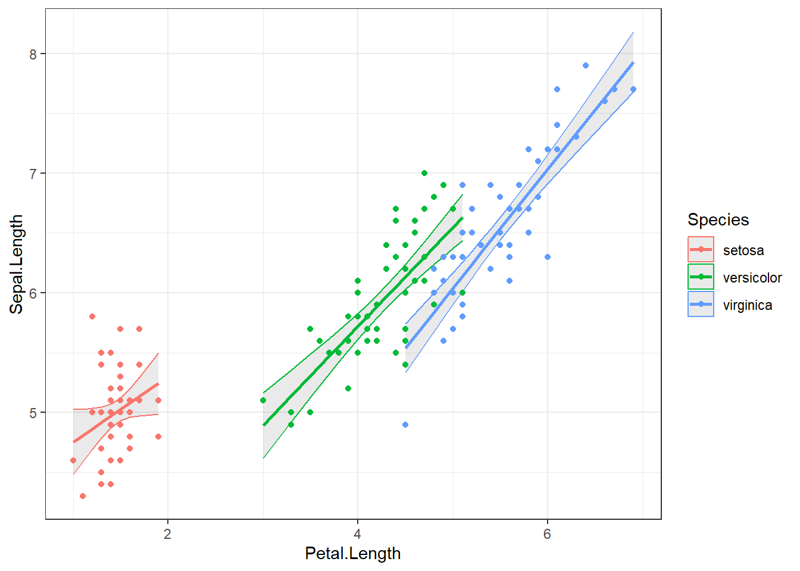

1+2Introduction to ‘R’ for statistical analysis
1 Introduction
This course will introduce
- R and RStudio statistical software
- Examples of performing common tasks in scientific data analysis
- Loading data
- Descriptive analysis
- Basic testing and modelling
- Making graphics
- Where to go for further support
The aim is to become familiar with the R/RStudio environment and some common functions and workflows. This will enable you to learn the specific functions that you need on your own or with further training.
Powerpoint slides for today’s session are here:
This handout was written in RStudio using the Quarto document preparation system. The source code is here: day1.qmd
1.1 Learning objectives
We will focus on the tasks used in a typical analysis of a single scientific dataset, mirroring the tasks usually conducted in other statistical software.
1.1.1 Specific tasks:
Day 1: R and RStudio basics
- Familiarity with R and RStudio
- The R language and R scripts
- Exploring data and calculating descriptive statistics using example data
Day 2/3: Importing data, cleaning, coding and typical analysis workflow
- Revise and consolidate day 1 learning
- Loading and wrangling data
- Simple hypothesis tests
- Estimating, diagnosing and interpreting linear models
- Making graphs using the ggplot2 package
2 R and RStudio
2.1 What are R and RStudio?
R is a free and open source statistics package, initially developed during the 1990s, and that has now become the world’s most widely used and comprehensive statistical software. R calls itself a programming language and environment for statistic computing.
That is, ‘R’ refers both to the software itself and the programming language that you use to interact with it.
RStudio is a free open source integrated development environment (IDE) for R that makes working R much easier. Most R users use RStudio and we recommend using RStudio for new users.
The great strength of R is in its contributed packages, these are community written add-ons that make R much more powerful and easy to use. We will introduce some commonly used packages for data management, analysis and graphing during this course.
2.2 Getting R and RStudio
If you are using a PC in the JIC IT training suite it will already have an up-to-date version of R and RStudio.
For other NBI managed devices you can install R and RStudio from the NBI software catalogue.
If you want to install R and RStudio on your own device:
Download and install the latest version of R from https://cran.r-project.org/
Then download and install RStudio from https://www.rstudio.com/
2.3 Starting RStudio
Start RStudio. It will detect your installation of R, and you should see a screen like this:

On the left is the console window, where you type commands and see output. The windows on the right hold various useful tabs, including your data, graphs, help files, and your command history.
2.4 Check R and RStudio are working, run your first command
- Click in the console window and type:
Press return on your keyboard. You should see:
[1] 3- Try a few other mathematical functions at the R console (eg):
sin(pi/2)
log(10)
exp(2)
1e4
1/0Do you understand the output from each of these commands?
3 Using projects and scripts
Before we go any further, we are going to start an RStudio ‘project’ to organise our work during this course. Using projects helps us to keep all of the data and analysis for a particular piece of work in the same place.
- Click on ‘New → New project’ in the main toolbar.
- Click ‘Start a new project in a brand new working directory’.
- Finally click ‘new project’ on the next screen.
Now you can choose where to create the new directory for your R project, and what to call it.
Make a project called ‘Rtraining’ or something like that, somewhere in your personal filestore (U drive).
If you are not comfortable making directories and working with files in your personal filestore, we’ll fix that now because it’s important!
Now, when you return to the main RStudio window you are working within your project. Notice that:
- The ‘working directory’ has automatically switched to the new directory that you created.
- The ‘files’ tab on the bottom left of the window is now showing the root of the project directory.
In practice an RStudio project directory should include all of the data files, source files and generated results corresponding to an analysis project. Eg for each paper I work on I tend to keep an RStudio project including all of the data files and scripts for that project. Using projects also help you to work with version control systems (like Github).
3.1 Making a script
We could do everything by typing commands into the console window as we have already seen, but this is not good if we want to remember or repeat something we have done, or share it with others.
So instead we will type our commands into files called R scripts and run the commands from there. With a script you can run and re-run bigger analyses that chain together all the functions you need for data loading, cleaning, analysing, reporting etc. R scripts have the file extension
Using scripts mean we can develop complex analyses, and that when we come back to them later, eg if something changes in our data that means we need to redo everything, or we want to tweak something in our analysis because of a reviewer’s comment, we can easily do this.
::: {.callout-tip title=“Always use a project, and keep scripts tidy!}
It is good to keep a separate R script for each analysis that you do, such that each starts with the functions to load the required data, then do any cleaning or coding that is necessary, then to perform and report the data analysis.
If you start making more complex projects you may want to write separate scripts for each of these elements.
:::
3.1.1 Look at some example R scripts
An example R script, annotated with comments, is in the files that accompany this handout. Let’s look at it now:
Load this script in R studio and practice running lines one at a time, or ‘sourcing’ the whole script all at once (see the section below for how to do this).
There is a second R script, including an analysis of the iris dataset that we’ll use today:
The iris script has also been ‘spun’ into a report, which you can see here:
We won’t cover making reports, websites or presentations in this course, but you should look into the Quarto system if you are interested.
3.1.2 Make a new script
Make a new script. Click on File → New File → R Script in the main RStudio window. An empty file will appear in the top-left pane.
Save your script with a sensible filename (even though it is empty). Having unsaved scripts is a bad idea, RStudio is sometimes unstable and while it will try to recover unsaved work it is not always guaranteed to. Get into the habit of saving your scripts regularly. Make sure it has the file extension
.RPut some of the mathematical functions that you have already tried into your script, with one on each line.
You can now run code from scripts in several ways. Try each of these:
Press ‘run’ or type Ctrl+Enter on the keyboard, RStudio will send the line that the cursor is on to the R console and will run it.
If you highlight an area of the script and then hit ‘run’ (or press Ctrl+Enter) then RStudio will send all the highlighted code to the R console.
If you save the file, then press ‘source’, R will load the file from disk and run all the commands from that file in sequence.
If you have your raw data saved, and you keep your scripts, then you don’t need to save your results or any of the variables that you generated or modified during your analysis. So long as the original data doesn’t change, running the script will reproduce all of your analysis and output. This is usually a better way of working than trying to save your environment with all of your results and tables in.
See also:
- https://kdestasio.github.io/post/r_best_practices/
- https://r4ds.had.co.nz/workflow-projects.html
- https://support.rstudio.com/hc/en-us/articles/200526207-Using-Projects
- https://rstats.wtf
for more information on using projects and scripts
For more complex projects you might be interested in using a pipeline tool such like targets to help keep your work organised, particularly if you are running analyses in multiple stages with some elements taking a long time.
4 Objects and functions
So far we have used R as a calculator. Next we’ll see how R stores objects and applies functions to data.
(Optional - a tutorial on packages, function and pipes using the cowsay, praise and spongebob packages.) Objects, functions, packages and pipes tutorial
4.1 Functions
Everything in R is done by executing ‘functions’. When you typed 1+2 at the console above you were calling the + function, with 1 and 2 as its arguments, and the result was printed in the console window.
Simple mathematical functions can be written using standard notation in this way (eg 1+2 or 3/4) but functions are more commonly called by their name, with their arguments in brackets, separated by commas. For example, to get say the logarithm (base 10) of 100, we would type
### Try this directly in the console, and by running it from your new script.
log(x=100, base=10)[1] 2Here, log is the name of the function, with x and base its arguments. The result is the value of the function (the value is what is returned).
- Try each of the following commands. Do you understand what they do any why?
### From now on, keep everything you try in a script file.
log(x=100, base=10)
log(x=100)
log(base=10, x=100)
log(100,10)
log(10,100)
1000 |> log() # Note the use of the pipe operator |> as an alternative way to call a function.
100 |> log(base=10)
log()
log4.1.1 Getting help
Let’s find out why the log command we used in the last section worked the way it did. In the console, type:
?logto read the help file for the log function. All R help files are structured in a similar way, so it’s useful to understand this now for a simple function like log.
Look at the Usage, Arguments and Value sections. These will be invaluable when you come to use R and use functions that you do not already know.
4.2 Objects
Instead of directly displaying the value of the function (‘value’ is what R calls the result of a function), you can give it a name and store it for later use:
x = 1+2or
x <- 1+2This does exactly the same thing; some R users use the arrow <- instead of = for assignment, so both forms will come up when you’re looking at help files or other people’s code. I (annoyingly!) tend to use either interchangeably.
Now you have an object called x in your environment that holds the number 3 (check your environment window). You can ask R to display the value of ‘x’ by just entering x (just entering the name of an object prints that object):
xOr you could do something else with x
x*2
log(x)
x |> log()
x |> log(10)What does this do?
x |> log() |> sqrt()Hint: it might help to understand if you read the pipe operator |> as “and then…”
To see the class of an object (what kind of thing is stored in the object), use the class() function.
class(x)Objects of different classes store different kinds of information. We will come across objects of different classes later.
4.3 Test yourself
- Make a new object called y which has the value of x+3. Then display y.
- Now change the value of x (eg using
x <- 6). Does the value of y change? - Objects can hold text strings instead of numbers. Try:
myname <- "George" # (or whatever your name is).
mynameWhat is the class of the ‘myname’ object?
- (Difficult!) Look up the function to turn a text string into upper case (an internet search will help you). Use this function to make a new object which has the same text as ‘myname’ but in upper case.
5 Using R to analyse data
We can R as a simple calculator like this but we’ll most often be using R to analyse datasets.
We’ll load a simple dataset into R, and do some analysis.
Note
There are two types of statistical analysis:
Descriptive statistics are used to describe the sample.
We use analytic (or inferential) statistics to test our hypotheses, estimate treatment effects and learn about populations.
Both types are important!
5.1 Download and explore the structure of the dataset in Excel
The ‘iris’ dataset is stored in a comma-separated value file here iris.csv
Download the dataset and have a look around in Excel. Note the structure of the dataset
The iris data is an example of a dataset in tidy form. We’ll learn more about this in the next session, but in short in has:
- A single rectangular table to represent the data
- A column for each variable (characteristic)
- A row for each observation (flower in this case)
This is very similar to how datasets are stored in software like SPSS or Stata, or in a database, but is different to how you might record data using GraphPad Prism. We’ll see more about how to arrange data like this later in the course.
Make sure the dataset is stored in the root directory of your project.
Start a new script to begin your analysis of the ‘iris’ dataset.
We can use the read.csv function to load data from a csv file (later we’ll see how to import Excel format data). Type:
iris <- read.csv("iris.csv")Check your ‘environment’ tab for a new object. Click on the object name to see it in the Viewer, or click on the small blue button next to it to expand the view in the environment window.
5.2 Exercise
What is the class of the
irisobject that you have created?What is included in this data?
What kind of descriptive statistics might we calculate to learn about this dataset?
What kind of analytic (inferential) questions might we ask of the data?
5.3 Explore the structure of the dataset using R
There are a few different functions you can use to explore a dataset. Test each with the iris data to see what they do.
str(iris)
head(iris)
summary(iris)
dim(iris)
nrow(iris)
View(iris)5.4 Use the data in calculations
We can extract individual variables (characteristics) and individual elements like this:
iris$Sepal.Length What do these lines do?
iris$Sepal.Length[1]
iris$Sepal.Length[c(2,4,6)]
iris$Sepal.Length[10:20]
c(2,4,6)
10:20What does this do?
plot(iris, col=iris$Species)
Note
iris$Sepal.length is a ‘vector’. A vector is a list of items all of the same type. Here its a vector of numbers. A data frame is a collection of vectors.
What are the types of each of the other vectors in the iris data frame?
We can use different R functions to get descriptive statistics for a vector. Try each of these functions and see if you can understand what it does:
mean(iris$Sepal.Length)
iris$Sepal.Length |> mean()
sd(iris$Sepal.Length)
iris$Sepal.Width |> hist()We can work on more than one variable at a time:
cor(iris$Sepal.Length, iris$Sepal.Width)
cor.test(iris$Sepal.Length, iris$Sepal.Width)with(iris , cor(Sepal.Length , Sepal.Width))5.5 Test yourself - More exploration of the iris dataset
- How many rows does the
irisdataset have? - What is the class of each of its columns?
- What is the mean sepal length of the flowers?
- What is the smallest (minimum) sepal width?
- What is the correlation between petal length and petal width?
- Is this correlation statistically significant?
- (Difficult) How many
virigincaflowers are included in the dataset?
- (Difficult) Can you tabulate the
speciesvariable? - (Difficult) Can you make a histogram of species with red bars?
5.6 Other packages for descriptive statistics (if you have time)
(If we have time) Base R does not have good functions for making descriptive tables and graphs. But there are many other packages that have been developed to help with this.
R packages are add ons developed by the R community to add or improve functions. R packages are the great strength of the R system and mean that R can be used to perform almost any data-related task.
In particular the gt system is very good for making tables, and the GGally package has a nice function for making pairs plots. You could install these packages and try them out:
install.packages("gtsummary")
gtsummary::tbl_summary(iris)Can you stratify this table by species? (Check the help)
install.packages("GGally")
GGally::ggpairs(iris)Compare this to the output from the ‘base’ function pairs(iris) or plot(iris).
6 Tidyverse
So far we haven’t tried to subset or stratify any analysis. Usually we’ll be interested in comparing different parts of the data, or looking at subgroups.
Before we go any further we’re going to install another set of packages. `Base’ R has a few ways to manipulate datasets, but these can get very clunky and you won’t use them much in practice so it’s better to start using add-on packages as soon as possible.
The two major packages of data wrangling functions are data.table and tidyverse.
Tidyverse is more widely used and so this is what we will focus on here. If you become more familiar with R you might want to explore data.table.
Note
I am only going to teach tidyverse methods because they are the most widely used. See https://wetlandscapes.com/blog/a-comparison-of-r-dialects/ for how to use base or data.table to perform the same options.
Tidyverse is in fact a large collection of packages. You can see all of the details here https://www.tidyverse.org/packages/. In this course we will use functions from the following packages:
- dplyr for data manipulation
- ggplot2 for making graphics
- broom for organising analysis results
Check if you have tidyverse installed on the computer you are using. Use the packages pane in the bottom right hand section of the screen and search for tidyverse. If it is installed you will see a corresponding line in the packages pane with the current installed version number.
If you do not have tidyverse installed, then install it now from the menu or by using
install.packages("tidyverse")This will install a lot of packages and might take a few minutes.
Once the tidyverse packages are installed you can use all of their functions.
We’ll start by using some of the functions from the dplyr package. dplyr includes functions for data manipulation and summarisation.
See https://dplyr.tidyverse.org/ for more information on the dplyr mains functions, and a cheat sheet for its day-to-day usage.
6.1 Using a function from dplyr
There are two ways to use functions installed as part of a package. For example, to use the glimpse function from the dplyr package to look at the iris dataset, you can type:
dplyr::glimpse(iris)or
library(dplyr) # or library(tidyverse)
glimpse(iris)I will load the tidyverse package, which will attach all of the ‘core’ tidyverse packages into my current session:
library(tidyverse)── Attaching core tidyverse packages ──────────────────────── tidyverse 2.0.0 ──
✔ dplyr 1.1.4 ✔ readr 2.1.5
✔ forcats 1.0.0 ✔ stringr 1.5.1
✔ ggplot2 3.5.0 ✔ tibble 3.2.1
✔ lubridate 1.9.3 ✔ tidyr 1.3.1
✔ purrr 1.0.2
── Conflicts ────────────────────────────────────────── tidyverse_conflicts() ──
✖ dplyr::filter() masks stats::filter()
✖ dplyr::lag() masks stats::lag()
ℹ Use the conflicted package (<http://conflicted.r-lib.org/>) to force all conflicts to become errors6.2 Using dplyr functions to manipulate and summarise data
The five main dplyr functions are select, filter, mutate, group_by, and summarise.
Let’s learn by example what each of these functions does:
iris |> select(Sepal.Length, Sepal.Width)
iris |> filter(Species=="setosa")
iris |> filter(Sepal.Length > 7.5)
iris |> arrange(Sepal.Length)
iris |> summarise(`Median Petal Width` = median(Petal.Width))
iris |> summarise(`Mean` = median(Petal.Width), `SD` = sd(Petal.Width))
iris |> mutate(Sepal.Area = Sepal.Length * Sepal.Width)
iris2 <- iris |> mutate(logPetalLength = log(Petal.Length))
iris2 <- iris |> mutate(PetalLengthGrouped = ntile(Petal.Length, 5) )So with dplyr we can take subsets of our data or our samples, split our samples up into groups, create new derived variables and make summary statistics.
Using pipes you can chain functions together. Suppose you wanted the mean sepal length of setosa flowers:
iris |> filter(Species=="setosa") |> summarise(mean(Sepal.Length))group_by and summarise are often used together, to make summaries over groups.
iris |> group_by(Species) |> summarise(mean(Sepal.Length), mean(Sepal.Width), n=n())It can be more readable if you write the command above using more than one line:
iris |>
filter(Species != "setosa") |>
group_by(Species) |>
summarise(
"Mean sepal length"=mean(Sepal.Length),
"Mean sepal width"=mean(Sepal.Width),
"Number of Samples"=n()
)# A tibble: 2 × 4
Species `Mean sepal length` `Mean sepal width` `Number of Samples`
<chr> <dbl> <dbl> <int>
1 versicolor 5.94 2.77 50
2 virginica 6.59 2.97 50Make sure you understand exactly what is happening with each of the commands above. In particular the last line, with filter followed by group_by followed by summarise demonstrates how simple functions can be built into powerful data manipulation and analysis commands.
6.3 Test yourself: data wrangling and summarising
Can you use dplyr to:
- Find the mean sepal length
- Make a new dataset including only flowers with a petal length less than 2
- Find the mean of the sepal length for flowers with a petal length less than 2? (hint: use pipes to chain together the answers from questions 2 and 1.)
- Find the median and range for sepal width stratified across species? (hint: pipe together a
group_byand asummarisecall)
7 Graphics
R has a simple built in system for making graphs but the outputs are not very good!
boxplot(Petal.Length ~ Species, data=iris)
Although this boxplot function isn’t very useful, note the ~ syntax as this is used widely elsewhere. See the ‘formula interface’ section below for more information.
The ggplot() system is much more flexible, and produces publication quality outputs. ggplot2 is a core tidyverse package, so we loaded it earlier. If it isn’t loaded (if R says it can’t find the ggplot function) then use library(ggplot2)
ggplot(iris) + aes(x=Sepal.Length, y=Sepal.Width, color=Species) + geom_point()# Using a pipe and multiple lines to improve readability
iris |> ggplot() +
aes(x=Species, y=Petal.Length, fill=Species) +
geom_boxplot() +
theme_bw()We’ll see more ggplot in later sessions, but note the syntax, in particular how a dataset is passed to the ggplot function, how we specify the linkage between the data and the plot, and how different elements are added to make the plot.
8 Hypothesis tests and linear models
Descriptive statistics are important, but our goal in science is often to test hypotheses or understand the mechanisms behind our data generation.
So, we might observe a difference in petal length between species in our sample, but we want to know if this reflects a real difference in average petal length in the population. That is, does petal length depend on species among iris flowers in general?
First, we can generate a simple box plot as previously to explore this question:
ggplot(data=iris, aes(x=Species, y=Petal.Length, fill=Species)) +
geom_boxplot() +
labs(x="Species", y="Petal Length") +
theme_bw()It looks like the two variables are related, but we would like to perform a hypothesis test to see if the difference is statistically significant, and to get an estimate (with confidence interval) for the difference.
To get the coefficients (mean differences between groups) we can estimate a linear model:
model1 <- lm( Sepal.Length ~ Species, data=iris)When you estimate a model R will not display any output. The results are all stored in the model object that is created. Then you can access whatever output you want using other functions, eg:
# Base R functions
summary(model1)
Call:
lm(formula = Sepal.Length ~ Species, data = iris)
Residuals:
Min 1Q Median 3Q Max
-1.6880 -0.3285 -0.0060 0.3120 1.3120
Coefficients:
Estimate Std. Error t value Pr(>|t|)
(Intercept) 5.0060 0.0728 68.762 < 2e-16 ***
Speciesversicolor 0.9300 0.1030 9.033 8.77e-16 ***
Speciesvirginica 1.5820 0.1030 15.366 < 2e-16 ***
---
Signif. codes: 0 '***' 0.001 '**' 0.01 '*' 0.05 '.' 0.1 ' ' 1
Residual standard error: 0.5148 on 147 degrees of freedom
Multiple R-squared: 0.6187, Adjusted R-squared: 0.6135
F-statistic: 119.3 on 2 and 147 DF, p-value: < 2.2e-16anova(model1)Analysis of Variance Table
Response: Sepal.Length
Df Sum Sq Mean Sq F value Pr(>F)
Species 2 63.212 31.606 119.26 < 2.2e-16 ***
Residuals 147 38.956 0.265
---
Signif. codes: 0 '***' 0.001 '**' 0.01 '*' 0.05 '.' 0.1 ' ' 1confint(model1) 2.5 % 97.5 %
(Intercept) 4.8621258 5.149874
Speciesversicolor 0.7265312 1.133469
Speciesvirginica 1.3785312 1.785469# A tidyverse method:
broom::tidy(model1, conf.int=TRUE)# A tibble: 3 × 7
term estimate std.error statistic p.value conf.low conf.high
<chr> <dbl> <dbl> <dbl> <dbl> <dbl> <dbl>
1 (Intercept) 5.01 0.0728 68.8 1.13e-113 4.86 5.15
2 Speciesversicolor 0.93 0.103 9.03 8.77e- 16 0.727 1.13
3 Speciesvirginica 1.58 0.103 15.4 2.21e- 32 1.38 1.79# Functions from the `gtsummary` package if you have it installed
gtsummary::tbl_regression(model1)| Characteristic | Beta | 95% CI1 | p-value |
|---|---|---|---|
| Species | |||
| setosa | — | — | |
| versicolor | 0.93 | 0.73, 1.1 | <0.001 |
| virginica | 1.6 | 1.4, 1.8 | <0.001 |
| 1 CI = Confidence Interval | |||
8.1 Test yourself (model outputs)
- Can you interpret the model summaries?
- Which model output format do you prefer?
- Can you estimate the linear model and display the summary in one line using pipes?
Note
You can run t-tests using lm, since a t-test is equivalent to a linear model with two group categorical predictor. Linear models generalise many traditional statistical procedures.
The only difference that you might see is that in R, the default t-test is not student’s t-test but Welch’s t-test, which does not assume equal variance between groups. Most of the time these are similar (and you should trust Welch’s test if they are not) but if you don’t see identical results between the lm and t.test functions this is likely the reason.
8.2 Further uses of linear models.
Generate all pairwise comparisons using emmeans or t-tests for individual pairs with filter then lm?
emmeans::emmeans(model1 , pairwise~Species)$emmeans
Species emmean SE df lower.CL upper.CL
setosa 5.01 0.0728 147 4.86 5.15
versicolor 5.94 0.0728 147 5.79 6.08
virginica 6.59 0.0728 147 6.44 6.73
Confidence level used: 0.95
$contrasts
contrast estimate SE df t.ratio p.value
setosa - versicolor -0.930 0.103 147 -9.033 <.0001
setosa - virginica -1.582 0.103 147 -15.366 <.0001
versicolor - virginica -0.652 0.103 147 -6.333 <.0001
P value adjustment: tukey method for comparing a family of 3 estimates You can get many different contrasts or test different hypothesis based on this model using the marginaleffects package.
Model diagnostics with the performance package.
performance::check_model(model1)8.3 More complex models (interactions and multiple regression)
Suppose we want to fit a more complex model, whereby sepal length depends on petal length, with the relationship allowed to vary by species.
# First make a model with Sepal.Length depending on Species and Petal.Length
model2 <- lm( Sepal.Length ~ Species + Petal.Length, data=iris)
summary(model2)
Call:
lm(formula = Sepal.Length ~ Species + Petal.Length, data = iris)
Residuals:
Min 1Q Median 3Q Max
-0.75310 -0.23142 -0.00081 0.23085 1.03100
Coefficients:
Estimate Std. Error t value Pr(>|t|)
(Intercept) 3.68353 0.10610 34.719 < 2e-16 ***
Speciesversicolor -1.60097 0.19347 -8.275 7.37e-14 ***
Speciesvirginica -2.11767 0.27346 -7.744 1.48e-12 ***
Petal.Length 0.90456 0.06479 13.962 < 2e-16 ***
---
Signif. codes: 0 '***' 0.001 '**' 0.01 '*' 0.05 '.' 0.1 ' ' 1
Residual standard error: 0.338 on 146 degrees of freedom
Multiple R-squared: 0.8367, Adjusted R-squared: 0.8334
F-statistic: 249.4 on 3 and 146 DF, p-value: < 2.2e-16# Now add the interaction term. These two models are the same.
model3 <- lm( Sepal.Length ~ Species + Petal.Length + Species:Petal.Length, data=iris)
model3 <- lm( Sepal.Length ~ Species * Petal.Length, data=iris)
summary(model3)
Call:
lm(formula = Sepal.Length ~ Species * Petal.Length, data = iris)
Residuals:
Min 1Q Median 3Q Max
-0.73479 -0.22785 -0.03132 0.24375 0.93608
Coefficients:
Estimate Std. Error t value Pr(>|t|)
(Intercept) 4.2132 0.4074 10.341 < 2e-16 ***
Speciesversicolor -1.8056 0.5984 -3.017 0.00302 **
Speciesvirginica -3.1535 0.6341 -4.973 1.85e-06 ***
Petal.Length 0.5423 0.2768 1.959 0.05200 .
Speciesversicolor:Petal.Length 0.2860 0.2951 0.969 0.33405
Speciesvirginica:Petal.Length 0.4534 0.2901 1.563 0.12029
---
Signif. codes: 0 '***' 0.001 '**' 0.01 '*' 0.05 '.' 0.1 ' ' 1
Residual standard error: 0.3365 on 144 degrees of freedom
Multiple R-squared: 0.8405, Adjusted R-squared: 0.8349
F-statistic: 151.7 on 5 and 144 DF, p-value: < 2.2e-16We can use augment from the broom package to add predicted values to our dataset, with confidence intervals.
# look carefully at the output from here:
library(broom)
model3 |> augment(interval="confidence")# A tibble: 150 × 11
Sepal.Length Species Petal.Length .fitted .lower .upper .resid .hat .sigma
<dbl> <chr> <dbl> <dbl> <dbl> <dbl> <dbl> <dbl> <dbl>
1 5.1 setosa 1.4 4.97 4.87 5.07 0.128 0.0226 0.337
2 4.9 setosa 1.4 4.97 4.87 5.07 -0.0724 0.0226 0.338
3 4.7 setosa 1.3 4.92 4.79 5.05 -0.218 0.0378 0.337
4 4.6 setosa 1.5 5.03 4.93 5.12 -0.427 0.0210 0.336
5 5 setosa 1.4 4.97 4.87 5.07 0.0276 0.0226 0.338
6 5.4 setosa 1.7 5.14 4.97 5.30 0.265 0.0583 0.337
7 4.6 setosa 1.4 4.97 4.87 5.07 -0.372 0.0226 0.336
8 5 setosa 1.5 5.03 4.93 5.12 -0.0266 0.0210 0.338
9 4.4 setosa 1.4 4.97 4.87 5.07 -0.572 0.0226 0.334
10 4.9 setosa 1.5 5.03 4.93 5.12 -0.127 0.0210 0.337
# ℹ 140 more rows
# ℹ 2 more variables: .cooksd <dbl>, .std.resid <dbl>Finally we can use ggplot to show these predicted values and confidence intervals. Take care to understand how the output from each function (ie lm, augment) is piped into the next.
lm( Sepal.Length ~ Species * Petal.Length, data=iris) |>
augment(interval="confidence") |>
ggplot() +
aes(x=Petal.Length, y=Sepal.Length, color=Species) +
geom_ribbon(aes(y=.fitted,ymin=.lower, ymax=.upper), alpha=0.1) +
geom_point() +
geom_line(aes(y=.fitted),lwd=1) +
theme_bw()
# Try changing the forumula to `Sepal.Length ~ Species + Petal.Length`
# Which model has the better fit? (you can use anova(model2, model3) to compare models)9 Extra material below here
Below this point is extra material that was cut from the main day 1 tutorial but I’ve kept in this document because it might be interesting. There are likely to be a few small mistakes in this section.
9.1 More detail on types and classes
We saw two object of two different ‘classes’ earlier. These classes were ‘numeric’ and ‘character’. The class of an object defines what kind of information it holds, and how other functions act on it.
There are four basic classes (modes) that you will commonly use and should be aware of. These correspond to the types of data you might have. The basic types are:
- ‘numeric’ – For keeping numbers, can be discrete or continuous
- ‘logical’ – can only take the values (TRUE or FALSE)
- ‘character’ – for strings of text
- ‘factor’ – for labelled categorical variables (ordered or unordered)
Later in this tutorial we will see objects of more complex classes, these can store lots of different information of different modes:
- ‘data.frame’ – storing datasets
- ‘lm’ – stores the all results of a linear regression model
9.2 Character strings
Character strings represent text rather than numbers. Strings are used to label categories in a dataset, to identify columns in a dataset, to make your outputs more readable. You also might find that part of your data has been entered as a string, for example patient identifiers or gene names in a database, or responses to open ended questions.
Strings are identified in R (and in most other programming languages) by enclosing them in quotes. Single quotes and double quotes can be used (and are treated almost identically), but double quotes are preferred. For example try:
print("Hello")
print('Hello')
# What happens here?
print(Hello)A common mistake in R is to forget to enclose strings in quotes. In which case R tries to interpret your input as an object name, leading to an error message if that name doesn’t exist.
9.3 Logicals
Logicals represent binary information in the form TRUE or FALSE. They most often arise as the result of a comparison, for example try:
3>2
"Hello" == "hello" # note the double equals sign, this distinguishes assignment from comparison9.4 Converting between types
Sometimes it is possible to convert an object from one class to another. For example, a number might be stored as a character string in your data, and you will need to convert it into a numeric before you can do any analysis with it. For example:
x <- "3"
x*2 # What is the error message here? What does it mean?
y <- as.numeric(x)
y*29.5 Missing elements in vectors
Often your data will include missing values. R uses NA to represent missing values. For example the following creates a vector (a single variable, like a single column of a data frame) with a missing value in the fourth position:
weights <- c(10,21,32,NA,14)
weights
Warning
Note the difference between NA (a missing value) and "NA" (a character string containing the letters N and A. I have been tripped up by this a few times when "NA" has been entered into a dataset.)
9.6 Exercise 1. Effect of missing values
Try some other functions with myvector to see what impact the missing data point has.
class(weights)
plot(weights)
weights>20
mean(weights) # what happens here? Why? Can you fix it?
is.na(weights) # what does this do?
sum(is.na(weights)) # can you explain what this does?The behaviour of R functions with missing data can vary. Some functions will not work, some will return NA but some will just exclude the missing elements and carry on. If you have missing data it is important to understand how the R functions you are using will handle it.
10 More descriptive statistics
In this rest of this session we’ll use base and tidyverse functions to complete some common descriptive and analytic tasks using the iris dataset.
10.1 A continuous variable stratified by a grouping variable, and the formula interface
We already saw a way to get means over a categorical variable with tidyverse:
library(tidyverse)
iris |> group_by(Species) |> summarise(mean(Sepal.Length))If we want more than one summary statistic for example, it’s easy with tidyverse (this is an example of a task that is difficult with base R):
iris |> group_by(Species) |> summarise(n(),mean(Sepal.Length),sd(Sepal.Length))Note here that we can write the call in more than one line to make it easier to read:
iris |>
group_by(Species) |>
summarise(
n(),
mean(Sepal.Length),
sd(Sepal.Length)
)# A tibble: 3 × 4
Species `n()` `mean(Sepal.Length)` `sd(Sepal.Length)`
<chr> <int> <dbl> <dbl>
1 setosa 50 5.01 0.352
2 versicolor 50 5.94 0.516
3 virginica 50 6.59 0.636dplyr is good for making summary statistics, but to make publication ready tables you can explore the gtsummary package.
https://www.danieldsjoberg.com/gtsummary/articles/tbl_summary.html
library(gtsummary)Warning: package 'gtsummary' was built under R version 4.3.3iris |> tbl_summary( by=Species )| Characteristic | setosa, N = 501 | versicolor, N = 501 | virginica, N = 501 |
|---|---|---|---|
| X | 26 (13, 38) | 76 (63, 88) | 126 (113, 138) |
| Sepal.Length | 5.00 (4.80, 5.20) | 5.90 (5.60, 6.30) | 6.50 (6.23, 6.90) |
| Sepal.Width | 3.40 (3.20, 3.68) | 2.80 (2.53, 3.00) | 3.00 (2.80, 3.18) |
| Petal.Length | 1.50 (1.40, 1.58) | 4.35 (4.00, 4.60) | 5.55 (5.10, 5.88) |
| Petal.Width | 0.20 (0.20, 0.30) | 1.30 (1.20, 1.50) | 2.00 (1.80, 2.30) |
| 1 Median (IQR) | |||
10.2 Recoding a variable into groups
Suppose we want to classify flowers into three groups based on their petal length. We need to add another categorical variable to the dataset.
What class should that new variable be?
Base R has the function cut that divides continuous variables into groups. Tidyverse has a few extensions of this (weirdly in the ggplot2 package), including cut_number that can divide up a continuous variable into three equal groups, and allow us to add labels to them.
cut_number(iris$Petal.Length, 3, labels=c("Short", "Medium", "Long") )# Using tidyverse to create this variable and add it to the dataset:
library(ggplot2)
iris <- iris |> mutate(PetalLengthGrouped = cut_number(Petal.Length, 3, labels=c("Short", "Medium", "Long") )) Although it can be useful descriptively, it is sometimes a very bad idea to group up your variables like this. See Don’t dichotomise your data for an explanation.